07Objective
Objective
Worked on multiple modules and delivered outcomes such as usability findings and digital assets in the form of user interface based on the analytic and comparative study following UX processes.

A UX research and redesign project for Dineout's restaurant discovery app — covering product study, heuristic evaluation, moderated usability testing with real users, and visual design refinement that introduced Mood Builder as a new way to discover restaurants.
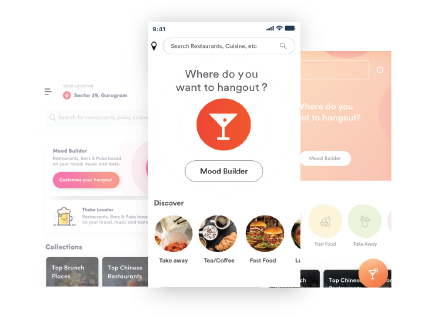
The app helps users find restaurants, browse offers, and book tables — but its discovery flow was built primarily around cuisine-based search and location filters. This project explored an alternative approach: letting users discover restaurants based on their mood, the kind of music they wanted, or the type of dining experience they were looking for — rather than requiring them to already know what cuisine they wanted.
Restaurant discovery apps traditionally ask users to search by cuisine, location, or price. But many users — especially those planning a social outing — start with a feeling: "somewhere fun tonight," "a quiet dinner," "live music." The existing Dineout experience had no way to serve these users. Mood Builder was the response: a discovery path built around intent and occasion, not just keywords.
"How might we help users discover restaurants when they know the experience they want but not the specific cuisine or place?"
Reduce decision fatigue
Help users narrow down options without requiring them to already know what they want.
Improve restaurant discovery
Introduce browsing paths beyond cuisine and location — mood, music, and dining occasion.
Encourage exploration
Make discovery feel like inspiration rather than a database query.
Create a more enjoyable browsing experience
Align the interface with how people actually think about going out — occasion-first, not cuisine-first.
The redesign had to work within the existing Dineout platform and navigation structure, maintain brand consistency, and remain feasible for the engineering team to implement without a ground-up rebuild.
Research for this project consisted primarily of moderated usability testing using the interactive prototype. Before conducting the UT, we ran a small pilot test of the Dineout mobile app to understand baseline expectations. We then created a set of preset tasks for participants to perform during the formal sessions.
The study was not supplemented with surveys, analytics, or competitive analysis — the focus was on direct observation of real users interacting with the prototype, documenting their behavior, confusion points, and satisfaction.
Before conducting the UT, we ourselves ran a small pilot testing of the Dineout mobile app. Before we could go further on UT, it was very essential for us to know what was expected from the application. We created the following tasks for our participants to perform while UT.
Total 4 participants (1 female and 3 male) were tested.
| Participants | Age & Sex | OS | Persona | Login |
|---|---|---|---|---|
| Participant 1 | Female/32 | Android | Habitual Diner | |
| Participant 2 | Male/35 | iOS | Habitual Diner | Google account |
| Participant 3 | Male/28 | Android | Social Diner | Mobile number |
| Participant 4 | Male/28 | Android | Habitual Diner | Google account |
Worked on multiple modules and delivered outcomes such as usability findings and digital assets in the form of user interface based on the analytic and comparative study following UX processes.
The design was aligned with the existing design trends which reflects the brand identity and received positive response from the product team and with end users.
The UX solution provided for the app enhanced the user's performance by curtailing the time taken to do the task, thus increasing their work efficiency.
| Task No. | Items | App |
|---|---|---|
| 1 | Restaurant listings page |
User felt restaurant location should be exact and precise in the listings' page as against what she found (Sion). She felt that address should be specific, such as name of the mall or the floor number. User was happy that clicking on 'Kunal Kapur recommends' gave her a list of restaurants, as expected. She was happy to find cost, available offers in the restaurant info. The user mentioned that images look enticing and real. |
| 2 | Detailed Restaurant info page |
User was satisfied with the info, menu and rating in the detail page. 'Reserve now for free' confused the user — she asked 'whether we need to pay to reserve?' The user was amused to find 'Times Food & Nightlife awards 2018'. She felt it increases credibility. |
| 3 | Reservation |
User does not want to scroll to select the time. She feels the time slot should be displayed as chart. On clicking 'edit' to change the number of guests, user was redirected to the detailed restaurant info page, compelling her to fill in all the details again. The user did not find any indication about the empty mobile number field. She had to manually search for the missing inputs and fill them in order to proceed with the reservation. |
| 4 | Login |
User was disappointed to see the login page during reservation process. Upon insisting, she logged in through Facebook, as she did not want to type and enter the phone number. |
| 5 | Confirmation page |
Table booking will be confirmed after checking with restaurant' message and timeline left her doubtful about the status of reservation. User felt 'ride with Uber' was a good feature. |
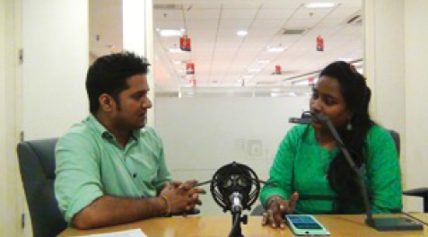
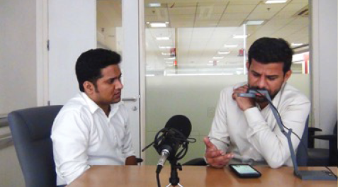
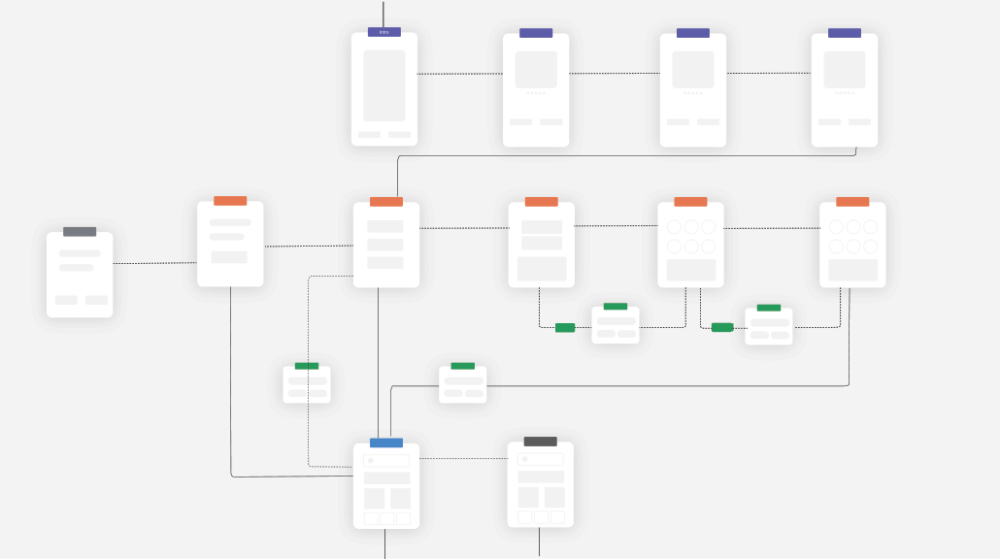
Can't reveal the entire flow diagram.
After analysing all the entry points, I began working on designing wireframe flows to comprehend the interactions and feedback patterns.
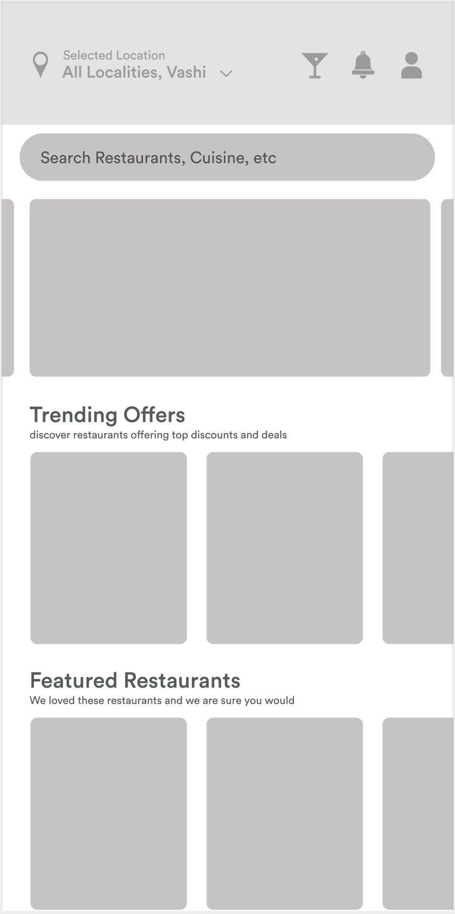
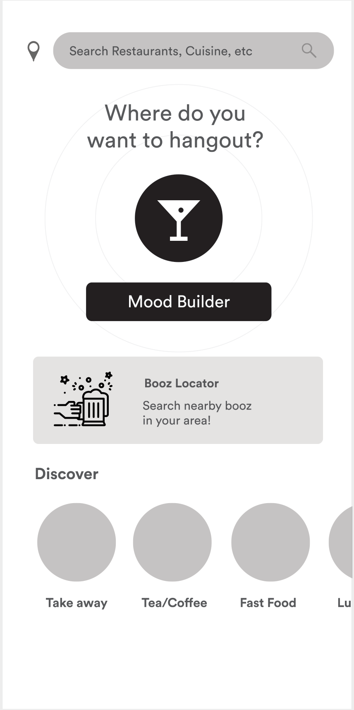
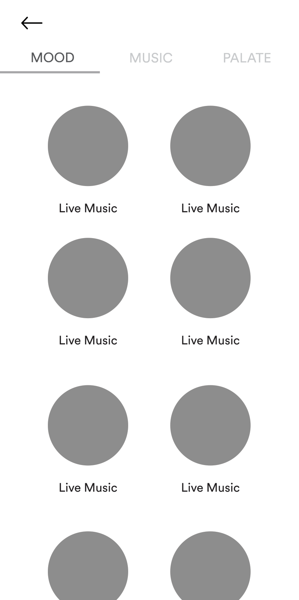
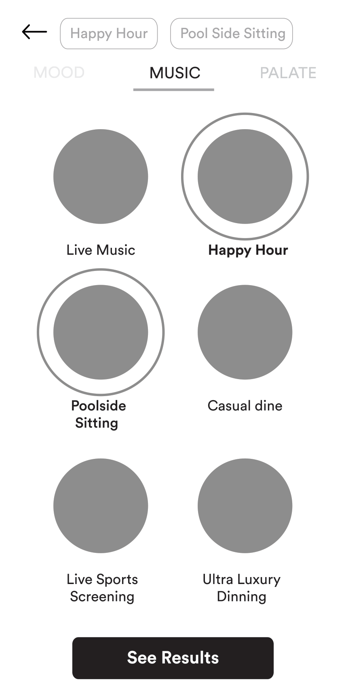
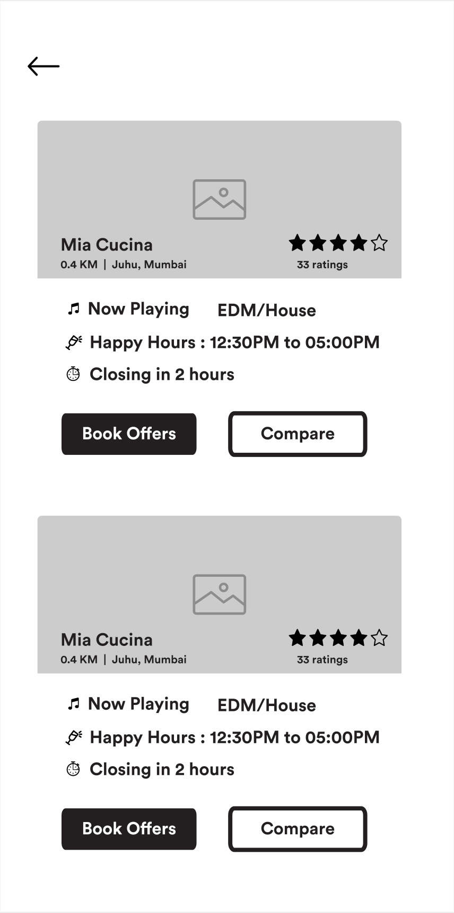
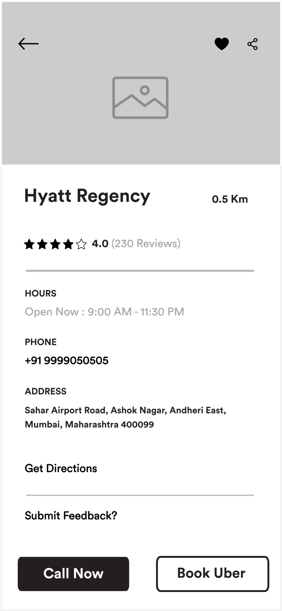
Where I tried different visual styles, setting the tones and guidelines following three principles.
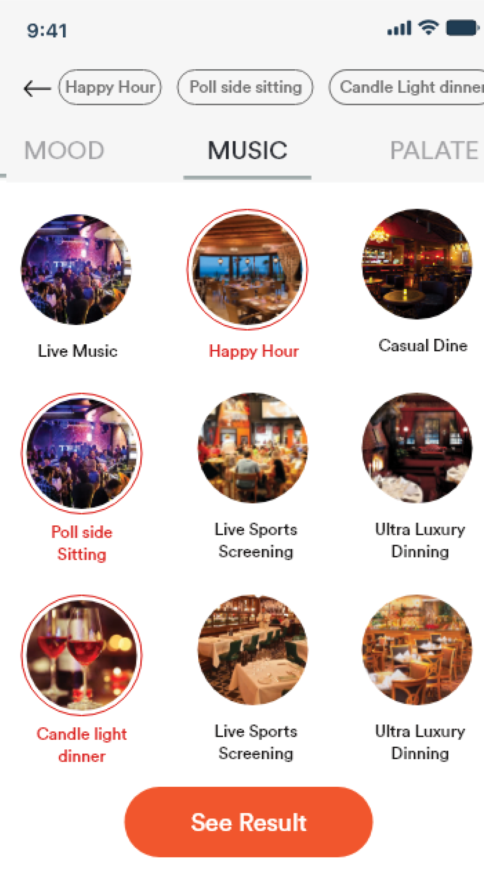
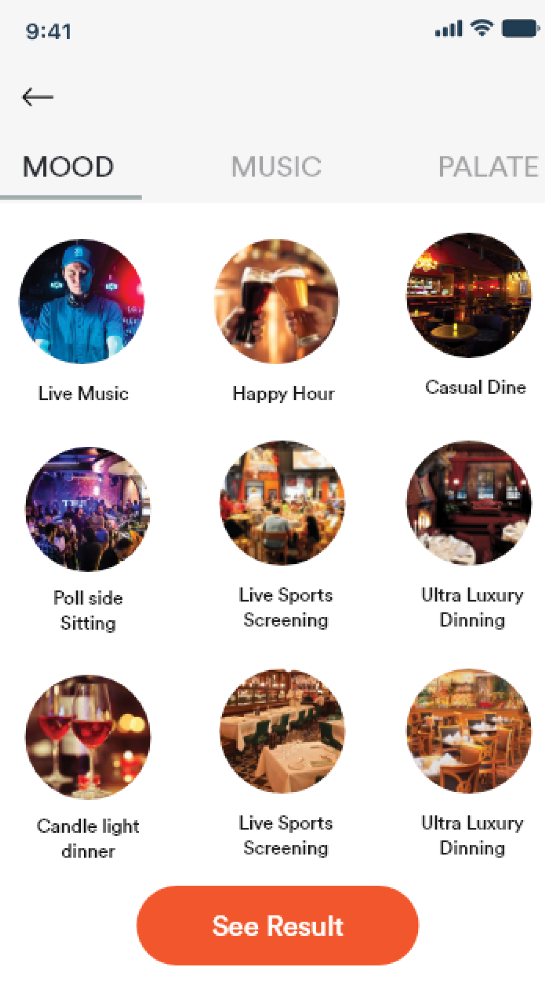
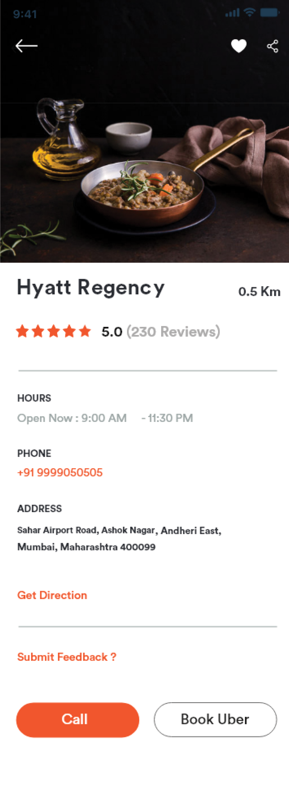
Why Mood Builder?
Usability testing showed users often start with an occasion ("happy hour," "quiet dinner") rather than a cuisine. Mood Builder gives that starting point a tappable interface — instead of asking users to translate a feeling into a search keyword.
Why circular category cards with images?
Image-driven circular thumbnails let users scan quickly by recognition rather than reading text labels. Each mood is represented visually — reducing cognitive load and encouraging browsing over searching.
Why tabs (Mood / Music / Palate)?
A tabbed structure lets users layer preferences progressively — start with mood, optionally add music or palate. This avoids overwhelming users with a single complex filter panel while keeping the full capability discoverable.
Why guided discovery over free-form search?
Free-form search assumes the user can articulate what they want. Guided discovery works for the far more common case — people who know the experience they're after but can't name a specific restaurant or cuisine.
This project was scoped as a concept validation — prototype, test, refine. Looking back with more experience, several areas stand out as opportunities I'd pursue differently.
Four participants validated the concept directionally, but a larger sample would have surfaced more edge cases and given the findings more statistical weight.
Post-launch analytics (funnel drop-off, session duration by entry path) would have quantified whether mood-first discovery actually converted better than search — not just whether users enjoyed it.
The image-heavy circular grid prioritises visual browsing. A text-based fallback, proper screen-reader labels, and contrast checking should have been part of the initial design pass, not a follow-up.
Today I'd explore ML-powered mood recommendations based on past behaviour — surfacing "you might be in the mood for..." rather than asking the user to self-select every time.